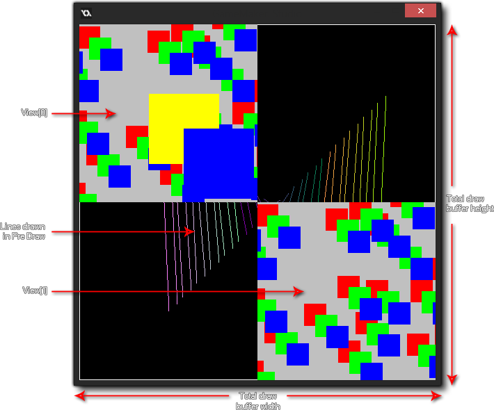

L' événement de tirage est celui qui régit ce que vous voyez à l'écran lorsque vous lancez votre jeu. Il est divisé en plusieurs sous-événements distincts afin de mieux gérer les différentes exigences de tirage pour votre jeu. L'image ci-dessous illustre l'ordre dans lequel chaque événement est exécuté:  L'événement Draw normal se divise en trois types de sous-événements: les événements Draw Begin, Draw standard et Draw End. En général, vous ne devez utiliser que le sous-événement standard Draw et vous devez savoir que toutes les instances d'une salle auront cet événement déclenché à chaque étape du jeu. Ce sous-événement sera donc toujours appelé aussi longtemps que le Par exemple, l'indicateur visible est défini sur true. Même si vous n'avez rien défini pour ce sous-événement dans les propriétés de l'objet (c'est-à-dire, pas de code ni d'actions), si l'objet a une image-objet assignée, il y aura toujours un sous-événement de dessin qui sera déclenché. En effet, GameMaker Studio 2 dispose de deux manières de dessiner des éléments dans le sous-événement Draw:
L'événement Draw normal se divise en trois types de sous-événements: les événements Draw Begin, Draw standard et Draw End. En général, vous ne devez utiliser que le sous-événement standard Draw et vous devez savoir que toutes les instances d'une salle auront cet événement déclenché à chaque étape du jeu. Ce sous-événement sera donc toujours appelé aussi longtemps que le Par exemple, l'indicateur visible est défini sur true. Même si vous n'avez rien défini pour ce sous-événement dans les propriétés de l'objet (c'est-à-dire, pas de code ni d'actions), si l'objet a une image-objet assignée, il y aura toujours un sous-événement de dessin qui sera déclenché. En effet, GameMaker Studio 2 dispose de deux manières de dessiner des éléments dans le sous-événement Draw:
- le dessin par défaut, qui correspond au moment où vous définissez l'image-objet dans les propriétés de l'objet et ne placez aucune action ni code dans le sous-événement Draw normal, auquel cas GameMaker Studio 2 dessine cette image-objet. Notez que toutes les transformations que vous effectuez dans d'autres événements pour changer l'échelle, l'index, le fondu, etc. de l'image, seront également reflétées tant que l'événement de dessin sera vide.
- le dessin personnalisé, qui correspond au moment où vous placez du code ou des actions dans l'événement draw. Cela GameMaker Studio 2 à GameMaker Studio 2 "Je veux contrôler ce que vous dessinez pour les instances de cet objet" et il remplace complètement le dessin par défaut. Cela signifie que, par exemple, vous pouvez attribuer un objet à une image-objet, puis définir l'événement draw pour dessiner du texte. Cette image-objet ne sera pas dessinée car vous n'avez pas demandé à GameMaker Studio 2 de le dessiner avec le texte.
Les autres événements du tirage au sort sont expliqués dans les sections énumérées ci-dessous:
Outre le sous-événement principal Draw, vous avez également un sous-événement Draw Begin et Draw End. Celles-ci agissent exactement comme un sous-événement Draw standard (c'est-à-dire: elles dessineront tout ce que vous y mettrez à chaque étape du jeu et pour toutes les vues), mais elles ne "dessineront pas par défaut", si elles ne sont pas ajoutées à un objet, et ils seront toujours exécutés avant / après le sous-événement standard Draw. Ainsi, vous auriez l'étape Draw Begin pour toutes les instances, puis Draw pour toutes les instances, puis finalement l'étape Draw End pour toutes les instances.
De cette manière, vous pouvez dessiner des objets ou définir des propriétés de dessin dans l'étape Draw Begin dans une instance et vous assurer que toutes les instances avec un événement Draw ou Draw End standard utiliseront ces propriétés ou dessineront sur ce que la première instance a dessinée. En gros, c’est un moyen sûr de garantir que certaines choses sont dessinées à certains moments, un peu comme les événements Begin Step et End Step.
Lorsque vous GameMaker éléments dans GameMaker Studio 2, il convient de noter quelques points, qu'il s'agisse d'un sprite que vous GameMaker, d'un shader ou de la 3D:
- Le tirage au sort est un événement très intensif, en ce sens qu’il s’agit d’un des événements qui prend le plus de temps et de ressources… à cette fin, il n’est jamais une bonne idée de faire autre chose que de dessiner. Enregistrez donc votre code volumineux ou vos actions complexes pour l’événement Step, les alarmes ou tout autre événement qui convient, mais laissez l’événement draw clair pour le dessin, car c’est ce qu’il fait de mieux.
- Si le paramètre visible de votre objet est désactivé (afin que ses occurrences ne soient pas dessinées), tous les événements de dessin sont ignorés (à l'exception de l'événement Resize ). Cela signifie que rendre une instance invisible arrêtera l'exécution de tout le code placé dans l'un de ces événements. Par conséquent, ne mettez pas de code essentiel dans les événements de dessin si ceux-ci ne sont pas visibles.
- Ce que vous dessinez n'a rien à voir avec le moteur de collision que vous choisissez (traditionnel ou physique), car il est défini par les propriétés de l'objet et par le sprite (ou le masque) que l'objet a été donné.
Le type de sous-événement Draw GUI relève de la catégorie Draw Event et est spécialement conçu pour dessiner des éléments GUI (Graphical User Interface) qui ne sont pas affectés par l'échelle ou la rotation de la vue. Cela signifie que vous pouvez faire en sorte qu'une instance dessine tous les éléments de votre HUD sans avoir à baser leur positionnement sur la position de l'instance dans la pièce ou la position de la vue actuelle.
Lorsque vous dessinez dans ces événements, il est important que vous sachiez que les coordonnées de dessin ne changent pas même lorsque les vues sont actives et que (0,0) est toujours le coin supérieur gauche de la surface d'application ou de l'écran (voir la note au bas de l'écran). bas de cette section), et la largeur et la hauteur par défaut sont 1: 1 avec la surface d’application. L'ordre des profondeurs est toujours maintenu entre différentes instances sur différentes couches (de sorte qu'une instance d'une couche inférieure dessine sous une d'une couche supérieure) et également au sein des événements eux-mêmes, car le sous-événement Draw GUI Begin dessine d'abord toutes les instances. l' interface graphique Draw standard dessine alors toutes les occurrences, et finalement le sous-événement Draw Gui End est déclenché.
De cette manière, vous pouvez dessiner des objets ou définir des propriétés de dessin dans Draw GUI Begin dans une instance et vous assurer que toutes les instances avec une sous-événements Draw GUI ou Draw GUI End standard utiliseront ces propriétés ou dessineront les propriétés de la première instance. tiré. En gros, c’est un moyen sûr de garantir que certaines choses sont dessinées à certains moments, un peu comme le font les sous-événements Begin Step et End Step.
Ces événements peuvent également être utilisés en conjonction avec les sous-événements Draw normaux (qui seront affectés par la position, l'échelle et la rotation de la vue, comme d'habitude). Si vous n'avez pas d' événement Draw mais que vous avez un événement Draw IHM, GameMaker Studio 2 dessine toujours par défaut l'image-objet pour l'occurrence (si elle en a un) comme d'habitude.
En ce qui concerne les autres sous-événements Draw, les événements Draw GUI seront toujours dessinés par-dessus tout ce qui est dessiné dans les événements Draw normaux. Ainsi, si vous avez une instance sur une couche inférieure avec un événement Draw IHM, elle s’appuiera sur l’instance située sur une couche supérieure avec un événement Draw habituel. Si les deux instances ont un sous-événement Draw GUI, l'ordre des couches sera respecté.REMARQUE: par défaut, cet événement dessine 1: 1 avec la taille de la surface de l'application, qui correspond normalement à la taille de la salle ou du port de visualisation. Cela signifie que lorsque l' option Correction du rapport d'aspect est activée dans les options de jeu, l'interface graphique ne sera pas dessinée au-dessus des barres noires qui "letterbox" du jeu. Ce comportement peut être désactivé à l’aide de la touche display_set_gui_maximise fonction, et vous pouvez également verrouiller l'événement GUI à une taille spécifique qui sera ensuite redimensionnée pour s'adapter automatiquement aux dimensions de la surface d'affichage ou d'application à l'aide de la fonction display_set_gui_size.
Les sous-événements Pre Draw et Post Draw font partie de la catégorie Evénement Draw. Cependant, contrairement aux autres événements Draw, ceux-ci sont dessinés directement dans la mémoire tampon d'écran, qui correspond à la taille de l'espace d'écran combiné pour toutes les vues actuellement visibles ou à la taille de la fenêtre si vous n'utilisez qu'une seule vue ou aucune. L'image ci-dessous illustre ceci:  Ainsi, si vous utilisez les événements Pre ou Post Draw, vous dessinez sur la cible de rendu plein écran qui aura la même taille que la fenêtre dans laquelle toutes les vues sont conçues. Si vous n'avez pas de vues actives, la taille de la fenêtre est définie à la place.
Le sous-événement Pre Draw est déclenché avant tout autre événement Draw. Vous pouvez y définir des valeurs, définir des propriétés de dessin et même dessiner des éléments sans se soucier des vues ou de la taille de la couche d'interface graphique (la taille de la couche d'interface graphique peut être identique). comme tampon d’écran, mais ce n’est peut-être pas le cas puisque vous pouvez définir la résolution de l’interface graphique dans le code)
Il est à noter que cet événement se produit avant que le tampon d'écran ne soit effacé, ce qui signifie que si vous ne désactivez pas l'effacement des vues dans l'éditeur de salle, vous ne verrez rien dessiné dans l'événement Pre Draw, car la première vue l'effacera. Si vous voulez pouvoir voir à travers les vues elles-mêmes ou si vous n'utilisez pas de vues du tout, vous devez également avoir défini la couleur d'arrière-plan pour avoir un alpha de 0 dans l' éditeur de salle.REMARQUE: Si vous désactivez ces options, vous remarquerez peut-être que des artefacts indésirables sont dessinés à l'écran lors du test du jeu (par exemple, des "traces" d'instances). En effet, vous dessinez directement sur la dernière image du tampon de dessin sans l’effacer. Cependant, vous pouvez utiliser draw_clear_alpha faire cela vous-même.
Le sous-événement Post Draw est déclenché après les événements Draw classiques, mais avant les événements Draw IHM. Comme l’événement Pre Draw, il est basé sur la taille de la taille de la mémoire tampon d’écran et est placé avant les événements Draw Draw IHM pour vous permettre d’effectuer des effets de post-traitement et d’autres choses en plein écran, simplement et facilement, sans interférer avec les modifications. Éléments HUD / GUI que vous pouvez avoir dans votre jeu.
Ce type d’événement appartient à la catégorie Dessiner un événement et, bien qu’il ne dessine rien, il réagit aux modifications apportées au canevas du dessin. En particulier, il est conçu pour réagir au changement de taille du canevas UWP lorsque la fenêtre de jeu est "cassé".
Sur la plate-forme cible UWP, il est important de capturer tout redimensionnement de la trame du jeu à partir du "cliché" de la fenêtre du jeu (lorsque l'utilisateur fait glisser la fenêtre sur le côté de l'écran, par exemple). Cet événement fera exactement cela et est déclenché chaque fois que le canevas est modifié, vous permettant d'ajouter ici un code personnalisé qui redimensionnera la vue ou repositionnera les éléments de la palette si nécessaire. Cette fonction est un moyen pratique d’éviter d’avoir un code d’événement d’étape qui vérifie ces éléments tout le temps.NOTE: Vous ne pouvez pas dessiner dans cet événement! Il est déclenché par le redimensionnement du canevas et sert uniquement à prendre en compte ce changement... tout dessin qui doit être effectué doit toujours figurer dans l'un des autres événements de dessin.